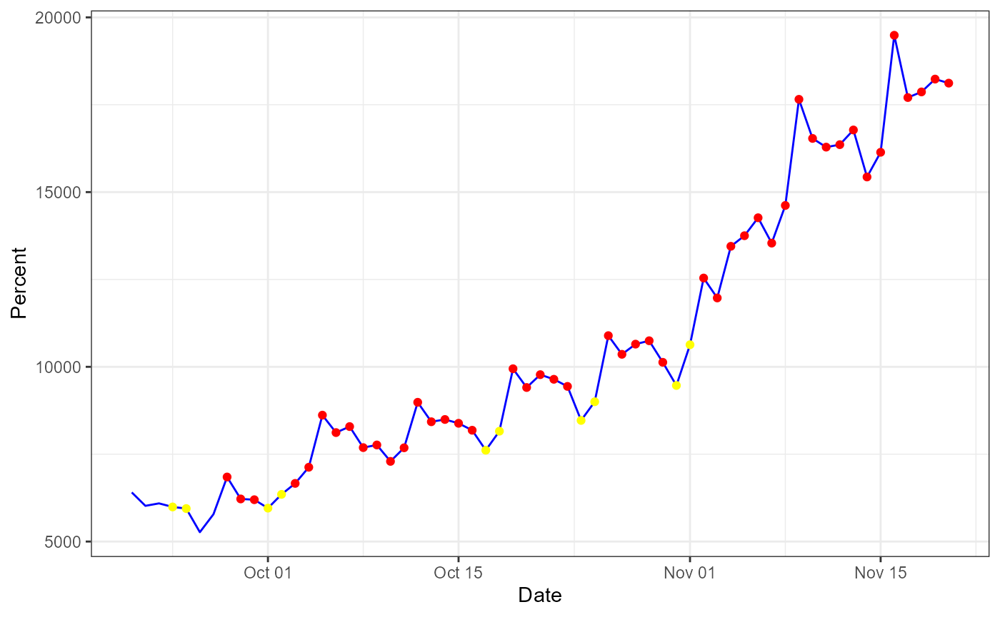
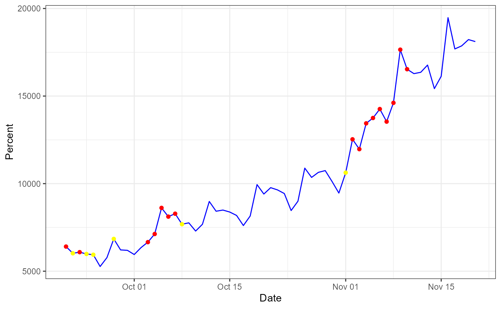
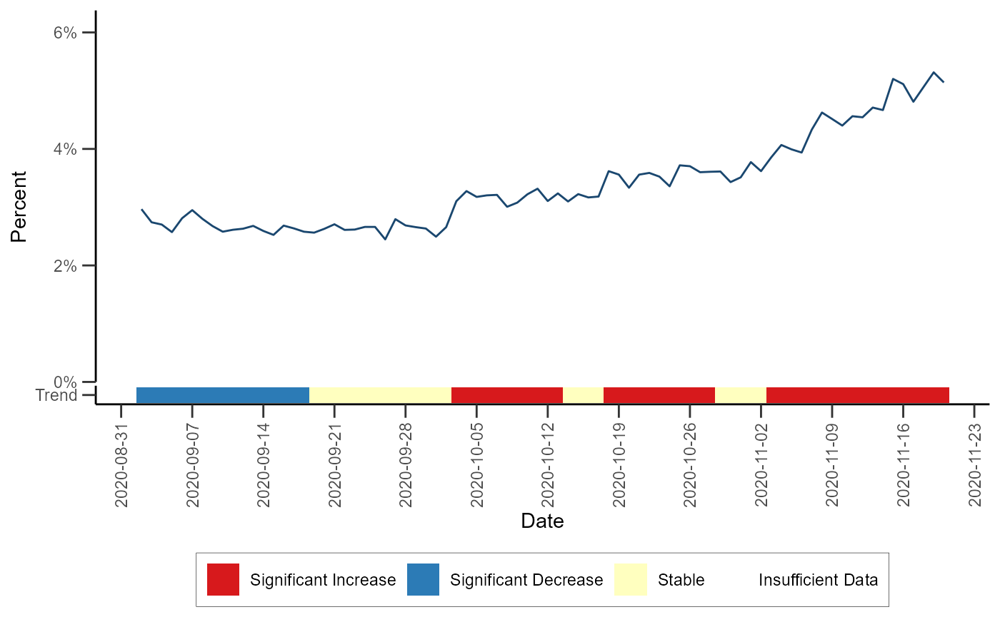

vignettes/Rnssp_trend_alert_detection.Rmd
Rnssp_trend_alert_detection.RmdIn this tutorial, we describe how to perform anomaly detection and trend classification analysis using line-level data from NSSP-ESSENCE. This vignette uses time series data from NSSP-ESSENCE data source for the CLI CC with CLI DD and Coronavirus DD v2 definition, limiting to ED visits (Has been Emergency = “Yes”).
We start this tutorial by loading the Rnssp package and all other necessary packages.
The next step is to create an NSSP user profile by creating an object of the class Credentials.
# Creating an ESSENCE user profile
myProfile <- Credentials$new(
username = askme("Enter your username: "),
password = askme()
)
# save profile object to file for future use
# save(myProfile, "myProfile.rda") # saveRDS(myProfile, "myProfile.rds")
# Load profile object
# load("myProfile.rda") # myProfile <- readRDS("myProfile.rds")With the NSSP myProfile object, we authenticate to NSSP-ESSENCE and pull in the data using the Time series data table API.
url <- "https://essence2.syndromicsurveillance.org/nssp_essence/api/timeSeries?endDate=20Nov20&percentParam=ccddCategory&datasource=va_hosp&startDate=22Aug20&medicalGroupingSystem=essencesyndromes&userId=2362&aqtTarget=TimeSeries&ccddCategory=cli%20cc%20with%20cli%20dd%20and%20coronavirus%20dd%20v2&geographySystem=hospitalstate&detector=probregv2&timeResolution=daily&hasBeenE=1&stratVal=&multiStratVal=geography&graphOnly=true&numSeries=0&graphOptions=multipleSmall&seriesPerYear=false&nonZeroComposite=false&removeZeroSeries=true&sigDigits=true&startMonth=January&stratVal=&multiStratVal=geography&graphOnly=true&numSeries=0&graphOptions=multipleSmall&seriesPerYear=false&startMonth=January&nonZeroComposite=false"
# Data Pull from NSSP-ESSENCE
api_data <- myProfile$get_api_data(url)
df <- api_data$timeSeriesData
# glimpse(df)As of June 11, 2021, the Rnssp package implements two anomaly detection algorithms:
The Exponentially Weighted Moving Average (EWMA) compares a weighted average of the most recent visit counts to a baseline expectation. For the weighted average to be tested, an exponential weighting gives the most influence to the most recent observations. This algorithm is appropriate for daily counts that do not have the characteristic features modeled in the regression algorithm. It is more applicable for Emergency Department data from certain hospital groups and for time series with small counts (daily average below 10) because of the limited case definition or chosen geographic region. The EWMA detection algorithm can be performed with alert_ewma() function (run help(alert_ewma) or ?alert_ewma in the R console for more).
df_ewma <- alert_ewma(df, t = date, y = count)Let’s visualize the time series with the anomalies for the state of South Dakota for example:
# Subset the data
df_ewma_state <- df_ewma %>%
filter(hospitalstate_display == "South Dakota")
# Plot time series data
df_ewma_state %>%
ggplot(aes(x = t, y = count)) +
geom_line(color = "blue") +
geom_point(data = subset(df_ewma_state, alert == "red"), color = "red") +
geom_point(data = subset(df_ewma_state, alert == "yellow"), color = "yellow") +
theme_bw() +
labs(x = "Date",
y = "Percent")
The Multiple Adaptive Regression (MAR) algorithm fits a linear model to a baseline of counts or percentages, and forecasts a predicted value som predefined days later. This model includes terms to account for linear trends and day-of-week effects. This implementation does NOT include holiday terms as in the Regression 1.2 algorithm in ESSENCE. The EWMA detection algorithm can be performed with alert_mar() function (run help(alert_mar) or ?alert_mar in the R console for more).
df_mar <- alert_mar(df, t = date, y = count)Let’s visualize the time series with the anomalies for the state of South Dakota for example:
# Subset the data
df_mar_state <- df_mar %>%
filter(hospitalstate_display == "South Dakota")
# Plot time series data
df_mar_state %>%
ggplot(aes(x = t, y = count)) +
geom_line(color = "blue") +
geom_point(data = subset(df_mar_state, alert == "red"), color = "red") +
geom_point(data = subset(df_mar_state, alert == "yellow"), color = "yellow") +
theme_bw() +
labs(x = "Date",
y = "Percent")
The trend classification fits rolling binomial models to a daily time series of percentages or proportions in order to classify the overall trend during the baseline period as significantly increasing, significantly decreasing, or stable. The algorithm can be performed via the classify_trend() function (run help(classify_trend) or ?classify_trend for more). The test statistic and p-value are extracted from each individual model and are used in the following classification scheme:
If there are fewer than 10 encounters/counts in the baseline period, a model is not fit and a value of NA is returned for the test statistic and p-value
data_trend <- classify_trend(df, data_count = dataCount, all_count = allCount)Let’s visualize the trends for the state of Montana for example:
# Defining a color palette
pal <- c("#FF0000", "#1D8AFF", "#FFF70E", "grey90")
# Plot trend
data_trend %>%
mutate(percent = data_count/all_count * 100) %>%
filter(title == "Montana") %>%
ggplot(., aes(x = t, y = percent)) +
geom_line(color = pal[2], alpha = 0.5) +
geom_hline(yintercept = -0.4, size = 4.5, color = "white") +
geom_segment(aes(x = t, xend = max(t), y = -0.4, yend = -0.4,
color = trend_classification), size = 3) +
scale_color_manual(values = pal, name = "Trend Classification") +
theme_few() +
labs(title = "Percent of Emergency Department Visits with Diagnosed COVID-19",
subtitle = "August 22nd, 2020 to November 20th, 2020",
x = "Date",
y = "Percent")